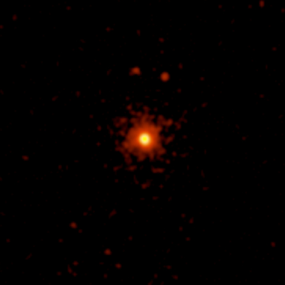

Red dwarfs are small (0.08-0.5 M⊙), low-surface temperature (2500-4000 K) Main Sequence stars with a spectral type of K or M. It is their low temperature which dictates their red appearance. Their small diameter (typically a few tenths that of the Sun) means that they are also faint. Because they are so small and have such low mass, they evolve slowly with estimated Main Sequence lifetimes of 100 billion years. This long lifetime means that there are many red dwarfs. Indeed, they are amongst the most common type of star. An example of a red dwarf is Proxima Centauri.
Red dwarfs are completely convective, meaning that the energy and material generated by fusion in the stellar core is carried up to the surface of the star, where it cools and sinks back down to be heated again. This mixing prevents a build-up of helium in the core which is a prerequisite for core helium fusion and the commencement of the Red Giant phase. Therefore, once the hydrogen fuel supply is exhausted and there is no longer any radiation pressure to counter gravity, the star collapses and heats up to become a white dwarf.

Credit: NASA/CXC/SAO